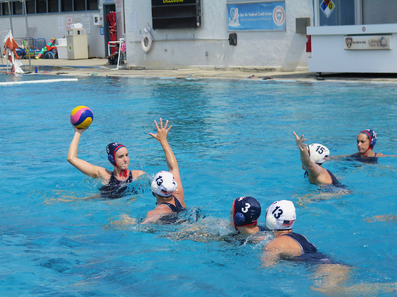
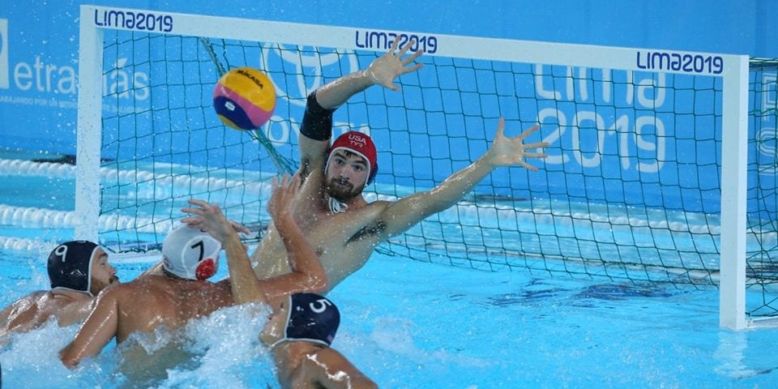
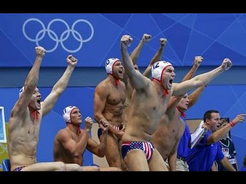

One of the most intense, yet rewarding sports in the world

Links for More Information + Highlights
Basic Information About the Sport

Water polo is a grueling yet gratifying competitive sport played between two teams in which players can't touch the bottom of the pool. After four quarters of play, the team that scores the most wins, resulting in teams developing a delicate balance between a mostly conservative, patient offense (outside of fast breaks) and an aggresive, opportunistic defense. Seven players are in the pool for each team, including one goalie per team. At the less skilled high school levels found throughout most of Texas, the team with the best conditioning and swimming speed will often find themselves victorious.
Most Successful Countries in Olympic Water Polo

Although Olympic water polo isn't the only form of international water polo play, it is by far the most broacasted and watched form of water polo across the world. For the men's teams, water polo first began Olympic play in 1900, and since then, Hungary has accomplished the most compared to every other country's men's teams. With 15 total medals and 9 gold medals, Hungary has and will always be one of the epicenters of the water polo world. Italy's squad is second with 8 total medals and 3 gold medals. Croatia and Serbia have surged in recent years to become two of the best at the sport; Croatia won the gold at London in 2012, and Serbia accomplished the same feat at Rio in 2016.
Women's Olympic water polo began in 2000, hosted by Sydney, Australia. Unlike their male counterparts, the US women's team is arguably the best team in the world. At all 5 Olympics in which women's water polo has been played, the US has medaled at all 5 Games with the following finishes: 1 Bronze (2004), 2 Silvers (2000, 2008), and 2 Golds (2012, 2016). There are only 3 other countries that have women's teams with multiple Olympic medals: Australia (3 medals), Italy (2), and Russia (2). It's amazing that Hungary's team haasn't medaled yet, and it's even more astounding that neither Croatia nor Serbia's women's teams have even qualified to compete at the Olympics yet!